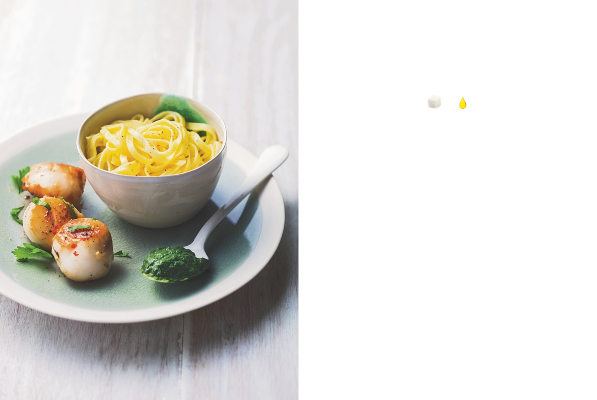

Coquilles Saint-Jacques
sauce aux herbes
APPORTS NUTRITIONNELS PAR PERSONNE
6
1
carrés
carré
de sucre
de graisse
PRÉPARATION : 20 minutes / CUISSON : 5 minutes
Ingrédients pour 4 personnes
1.
Rincez et essuyez les Saint-Jacques, gardez-les au frais.
12 noix de Saint-Jacques fraîches
ou décongelées (avec les corails
2.
Effeuillez le persil et coupez les feuilles du cresson au ras
si vous voulez)
des tiges sans délier la botte. Lavez et égouttez le tout. Faites
600 g de tagliatelles fraîches
bouillir une casserole d’eau légèrement salée et plongez-y
1 botte de persil plat bien frais
le persil et le cresson. Au retour de l’ébullition, égouttez-les et
1/2 botte de cresson
plongez-les immédiatement dans de l’eau très froide (de préférence
1 gousse d’ail épluchée
contenant quelques glaçons). Égouttez-les de nouveau et essorez-les
De 5 à 10 cl de lait écrémé
bien entre vos mains.
Le jus de 1/2 citron
Un filet d’huile d’olive
3.
Mettez les herbes essorées dans le bol d’un robot et ajoutez
Sel, poivre du moulin
l’ail. Mixez en une purée fine, en ajoutant un peu de lait écrémé
petit à petit jusqu’à ce que vous obteniez une consistance onctueuse.
Ajoutez le jus de citron, salez et poivrez. Faites chauffer doucement
cette sauce dans une casserole sans la faire bouillir et gardez-la
au chaud.
4.
Enrobez les Saint-Jacques d’un filet d’huile d’olive, salez-les
et poivrez-les, et poêlez-les sur feu moyen, sans trop les saisir,
2 minutes sur une face et 1 min 30 sur l’autre face. Servez
avec la sauce aux herbes et les tagliatelles.
L’ASTUCE DE CHEF
Ce plat est à préparer à partir de novembre, quand les coquilles
Saint-Jacques sont abondantes. Toute l’année, vous trouverez
des Saint-Jacques surgelées pour un prix très raisonnable.
Notez que les 6 carrés de sucre sont contenus dans les tagliatelles,
les Saint-Jacques seules contiennent 0 carré de sucre.
Poissons et fruits de mer
81